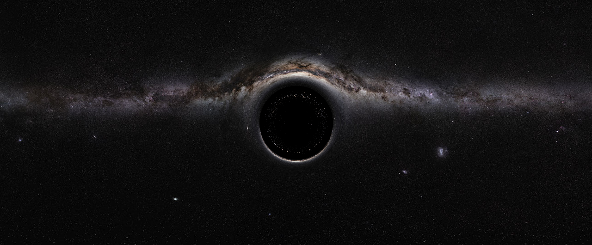
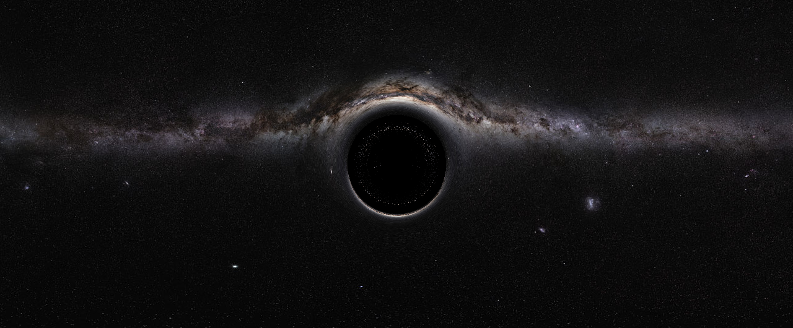

Overview
I created a general relativity ray tracer to visualize black holes. I impose the null condition to derive the lightlike geodesics given the Schwarzschild metric to derive first-order equations of motion. The path is then integrated using a fourth-order Runge-Kutta numerical integration to determine the color of each pixel on the camera plane. I also added support for CUDA acceleration to cut down runtime from over 50 minutes for the example picture attached on a CPU, to just 10 seconds with a GPU with the same image. Currently, there is support for an orthographic, plane-parallel camera with a black hole placed between an image and the camera plane.
An observing plane is placed parallel to an image plane, and rays are shot out from each pixel perpendicularly from the observing plane toward the image plane. When a ray intersects with the image plane, the color is mapped to the location on the observation plane. This gives us a plane-parallel orthographic camera projection. There is a black hole placed in between the planes, and the black hole's influence on each ray is numerically calculated.
Starting from the schwarzschild metric, we find the Laplacian to derive the first-order the equations of motion for a lightlike geodesic. I took advantage of the symmetry of the metric to solve for the equations of motion in polar, 2-d coordinates initially. Since a vector in 3-d space can be projected into an equatorial plane of the black hole, the 2-d polar solution is sufficient with a few transformations.
Fourth-order Runge-Kutta numerical integration is used to integrate the first-order equations, with added support for GPU acceleration with a CUDA kernel, written with the Numba library. Using a GPU accelerates rendering by a factor of over 300, allowing for higher-resolution images to be rendered quickly. Some example images and their corresponding reference background images are shown to the left.
Features
- Simulation of a Schwarzschild black hole on a background image
- GPU acceleration through CUDA
Technologies / Skills
Python (Numpy, Pandas, Numba, Matplotlib), CUDA, Computational Physics
Future Work
Future work will be to visualize null geodesics in metrics given by other solutions to Einstein's equations, like the Kerr metric of a spinning black hole. Additionally, I want to implement other camera projections to offer different perspectives of the black hole, as well as add functionality to create animations. A long term goal will be to optimize the algorithm enough to render frames in realtime.